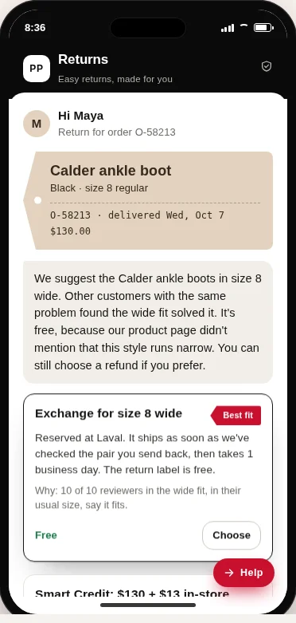

Perfect Pair
Turning returns into the right pair
The challenge
A fit-related return can become a lost sale, an additional handling cost and a missed opportunity to understand the customer. Our team explored how agentic AI could help customers find the right pair while protecting the retailer’s margin.
The solution
Perfect Pair brings customer context, product reviews, fit signals, return policy and available stock into one decision flow. It compares exchanges, credit and refunds, explains the trade-offs and routes judgment calls to people. A complementary prevention workflow identifies recurring return causes and proposes product-information improvements or quality follow-ups.
From business analysis to a competition prototype
Our team used real ALDO data provided for the competition to investigate return patterns and estimate the potential value of converting suitable refunds into exchanges. I contributed to the business-value analysis and solution discussions. The team combined this business case with an agentic return workflow and completed AWS integration for the competition.
A walkthrough of the early prototype
Early offline prototype using simulated scenarios
In the simulated fit scenario, Maya’s boots are tight across the toes. Perfect Pair recommends size 8 wide while keeping a refund available. The workflow reserves a replacement, creates the exchange and return label, and releases the exchange after a store associate inspects the returned pair.
The interaction walkthrough also shows:
- Evidence, tool calls and decisions in a visible trace.
- Option comparison that considers fit, return costs and retained value.
- Human-review queues for high-value or unclear cases.
- Product-page guidance drafts and quality follow-ups from recurring return patterns.


Project outcome and value
Our team won the Product Fit Award and received a $750 prize.
The team delivered a final pitch, a business case informed by real ALDO data and an AWS-connected competition solution. Scenario analysis estimated the potential business value of converting suitable refunds into exchanges; these projections were not measured operating results.
Perfect Pair connects customer service with inventory, merchandising and financial decisions—helping customers find a suitable resolution while turning return feedback into opportunities for improvement.